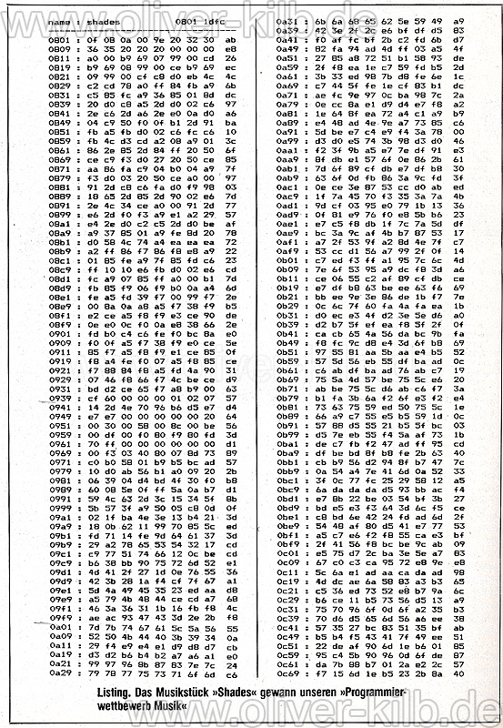

8-bit-Musik
Ursprünge
Arcade-Automaten
Heimcomputer
→ Einfluss der Endbenutzer/Kunden auf technische Entwicklung
Tonerzeugung
An-/Ausschalten
Wellenformen: Rechteck-, Sinus-, Sägezahnspannung, Weißes Rauschen
Samples
aber:
CPU-Blocking
mehrere Kanäle schwierig
Lösung: dedizierte Soundchips
- Nintendo: Ricoh RP2A03
- Programmable Sound Generator
- 3+1+1 Stimmen: 2x pulse-, 1x triangular wave, 1x white noise, Samplekanal
- C64
- MOS Technology SID (6581, 8580)
- Sound Interface Device
- 3 Stimmen, jeweils bis zu 4 kombinierbare Wellenformen
- Stand der Technik bis zur Einführung richtiger Soundkarten (mehr Kanäle, “Vereinheitlichung”…)
Verschiedene Geräuschformen am NES
Wie man Sound/Musik macht
- SID werden direkt programmiert (z. B. mit BASIC)
- Zugriff direkt auf Register,
poke, etc. - C64: Befehle aus Handbuch übernehmen
- Programmieren in Machinensprache
Codebeispiel:
C64 Handbuch S. 90
10 rem michael row the boat ashore 20 si=54272:fl=si:fh=si+1:tl=si+2:th=si+3:w=si+4:a=si+5:h=si+6:l=si+24 30 pokel,15:poketh,13:poketl,15:pokea,3*16+15:pokeh,9 40 read x:ready:readd 50 ifx=-1thenend 60 pokefh,x:pokefl,y 70 pokew,65 80 for t=1 to d:next 90 pokew,0 100 goto 40 110 data17,103,250,21,237,250,26,20,400,21,237,100,26,20,250,29,69,250 120 data26,20,250,0,0,250,21,237,250,26,20,250,29,69,1000,26,20,250,0,0,250 130 data-1,-1,0
N3rdroom - Beispiel Feuerwerk(sound)
Vereinfachung der Vorgehensweise notwendig
- sehr aufwändige Programmierung/Komposition
- exklusiv für “Spezialisten”/“Experten”
- Timing und ineinandergreifen verschiedener Instrumente
- Looping
- Arpeggio statt Akkord
Beispiel: Chris Hülsbeck - Shades

zum Abtippen.
Abhilfe: spezielle Musikprogramme
Weiterentwicklung Tracker
Heute
Vergleich NES - C64
Sprachsynthese
zuerst: Wiedergabe von aufgenommener Sprache
nächster großer Schritt: Zugriff auf und Wiedergabe von Allophonen
Beispiel C64: SAM
Codeauszug:
{speed: 40, pitch: 64, text: 'ohohoh'},
{speed: 40, pitch: 76, text: 'ohohoh'},
{speed: 40, pitch: 96, text: 'sehehehehehehehehehey'},
{speed: 40, pitch: 76, text: 'kaeaeaeaeaeaeaeaeaen'},
{speed: 40, pitch: 64, text: 'yuxuxuxuxuxuxw'},
{speed: 40, pitch: 48, text: 'siyiyiyiyiyiyiyiyiyiyiyiyiyiyiyiyiyiy'},
...
Quelle: https://discordier.github.io/sam/star-spangled-banner.html
16-bit vs 8-bit
- Musiksample wird quantifiziert
- dadurch Entstehung von Noise
8bit - 8-bitish - …
Abgrenzung durch:
- eingesetzte Technik
- Beachtung der technischen Limitierungen
- eingesetzter Sound
SID-Tunes/Chiptunes
8-bitish
künstlerische Durchbrechung
Bitpop
Nintendocore
- Horse The Band
- iamerror
SID Metal/Nintendo Metal
(orchestrale) Interpretationen von (8-bit)Spielemusik
Konzertante Darbietung
Welle:Erdball@Breakpoint 2006
🌟 🍳 🌟 🍳 🌟
Vielen Dank

Quellen
- 1ucasvb. 2011. Koji Kondo - „The Legend of Zelda (Theme)“ – Chiptune Visualization / NES NSF. https://www.youtube.com/watch?v=gKXGDuKrCfA (zugegriffen: 19. Januar 2022).
- acrouzet. 2018. Chris Huelsbeck - „Shades“ (C64) [Oscilloscope View]. https://www.youtube.com/watch?v=uBJefYLCJ0M (zugegriffen: 19. Januar 2022).
- Akash Murthy. 2020. 6. Bit Depth - Digital Audio Fundamentals. https://www.youtube.com/watch?v=X4JEMCQMwOM (zugegriffen: 19. Januar 2022).
- Depth of Life. 2020. Ultimate 8-bit Electro Gaming Music Mix 2020 - Chiptune Music Mix. https://www.youtube.com/watch?v=xb0cMDEyMzg (zugegriffen: 19. Januar 2022).
- Erbe, Marcus. 2020. Review: Performing Bytes: Musikperformances der Computerspielkultur, by Melanie Fritsch. Journal of Sound and Music in Games 1, Nr. 3 (1. Juli): 68–70. doi:10.1525/jsmg.2020.1.3.68, .
- Felix Zöltsch. 2021a. Tutorial Soundmonitor. https://www.youtube.com/watch?v=mITeRl6XEyk (zugegriffen: 19. Januar 2022).
- —. 2021b. Zur Bedeutung des Programms Soundmonitor für die Chipmusikszene. https://www.youtube.com/watch?v=shB-SkcUz6c (zugegriffen: 19. Januar 2022).
- GAST. 2020. Was ist 8-Bit-Musik? Language at Play. 4. Mai. https://languageatplay.de/2020/05/04/was-ist-8-bit-musik/ (zugegriffen: 19. Januar 2022).
- Juha-Matti Pulkkinen. 2015. Arvo Pärt - Tabula Rasa: Ludus (8-Bitish/Chiptune). https://www.youtube.com/watch?v=gX1lNoC_aQs (zugegriffen: 19. Januar 2022).
Quellen II
- Kilb, Oliver. 2016. 1986: Chris Hülsbeck und Shades verblüffen die C64 Welt. Oliver Kilb. 21. Mai. https://www.oliver-kilb.de/wp/2016/05/22/1986-chris-huelsbeck-und-shades-verblueffen-die-c64-welt/ (zugegriffen: 19. Januar 2022).
- N3rdroom. 2020. C64 Basic - ein digitales Feuerwerk auf dem C64. https://www.youtube.com/watch?v=Bc_4hgeVmEg (zugegriffen: 19. Januar 2022).
- O A. 2018. Soundmonitor. In: Wikipedia. 25. Oktober. https://de.wikipedia.org/w/index.php?title=Soundmonitor&oldid=182150159 (zugegriffen: 19. Januar 2022).
- O A. 2021a. Chiptune. In: Wikipedia. 27. Mai. https://de.wikipedia.org/w/index.php?title=Chiptune&oldid=212436588 (zugegriffen: 19. Januar 2022).
- O A. 2021b. Bitpop. In: Wikipedia. 11. September. https://de.wikipedia.org/w/index.php?title=Bitpop&oldid=215493093 (zugegriffen: 19. Januar 2022).
- O A. 2021c. The Ultimate Soundtracker. In: Wikipedia. 4. Oktober. https://de.wikipedia.org/w/index.php?title=The_Ultimate_Soundtracker&oldid=216118965 (zugegriffen: 19. Januar 2022).
- O A. 2021d. Videospielmusik. In: Wikipedia. 9. November. https://de.wikipedia.org/w/index.php?title=Videospielmusik&oldid=217142314 (zugegriffen: 19. Januar 2022).
- O A. 2021e. MOS Technology SID. In: Wikipedia. 17. November. https://de.wikipedia.org/w/index.php?title=MOS_Technology_SID&oldid=217340465 (zugegriffen: 19. Januar 2022).
- O A. HVSC - Commodore 64 music for the masses! https://www.hvsc.de/downloads (zugegriffen: 19. Januar 2022a).
Quellen III
- O A. SAM: Software Automatic Mouth. https://simulationcorner.net/index.php?page=sam (zugegriffen: 19. Januar 2022b).
- O A. Necsus | The resolution of sound: Understanding retro game audio beyond the ‘8-bit’ horizon. https://necsus-ejms.org/the-resolution-of-sound-understanding-retro-game-audio-beyond-the-8-bit-horizon/ (zugegriffen: 19. Januar 2022c).
- O A. FRN: micromusic makroskopisch betrachtet - wissenswertes über chipmusik. freie-radios.net. https://www.freie-radios.net/42946 (zugegriffen: 19. Januar 2022d).
- O A. SAM: Software Automatic Mouth. https://discordier.github.io/sam/ (zugegriffen: 19. Januar 2022e). rotareneg. 2018. 16 bit audio vs 8 bit audio. https://www.youtube.com/watch?v=r9jPppUMbCo (zugegriffen: 19. Januar 2022).
- The 8-Bit Guy. 2015. Wie damals PC Sound funktionierte. https://www.youtube.com/watch?v=q_3d1x2VPxk (zugegriffen: 19. Januar 2022).
- —. 2019. How Speech Synthesizers Work. https://www.youtube.com/watch?v=XsMRxNSDccc (zugegriffen: 19. Januar 2022).
- transmission64. 2021. welle:erdball at Transmission64 2021 Demoparty act. https://www.youtube.com/watch?v=ZonPpiU2gKs (zugegriffen: 19. Januar 2022).
- Wothke, Juergen. WebSid - the first HTML5/JavaScript C64 music player. http://www.wothke.ch/websid/ (zugegriffen: 19. Januar 2022).
- Ye olde Netzpirat. 2011. Welle:Erdball Konzert live @ Breakpoint 2006. https://www.youtube.com/watch?v=qi5N2tq5VpQ (zugegriffen: 19. Januar 2022).